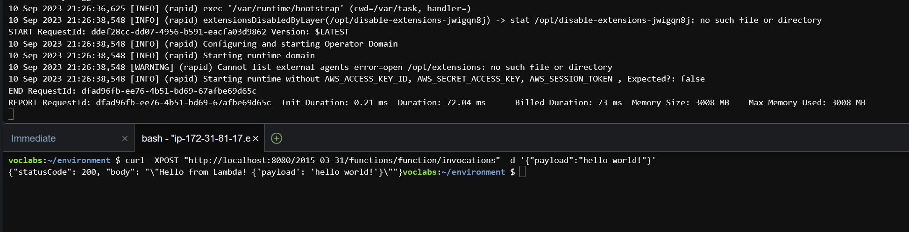
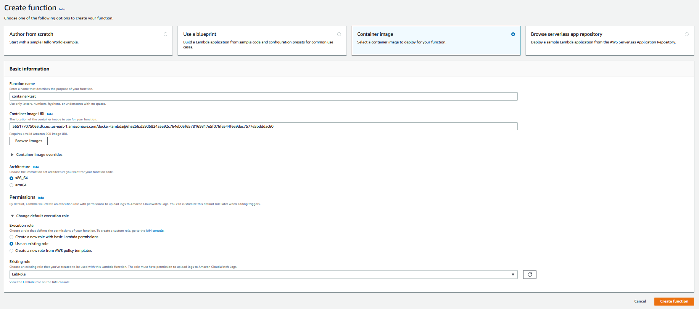
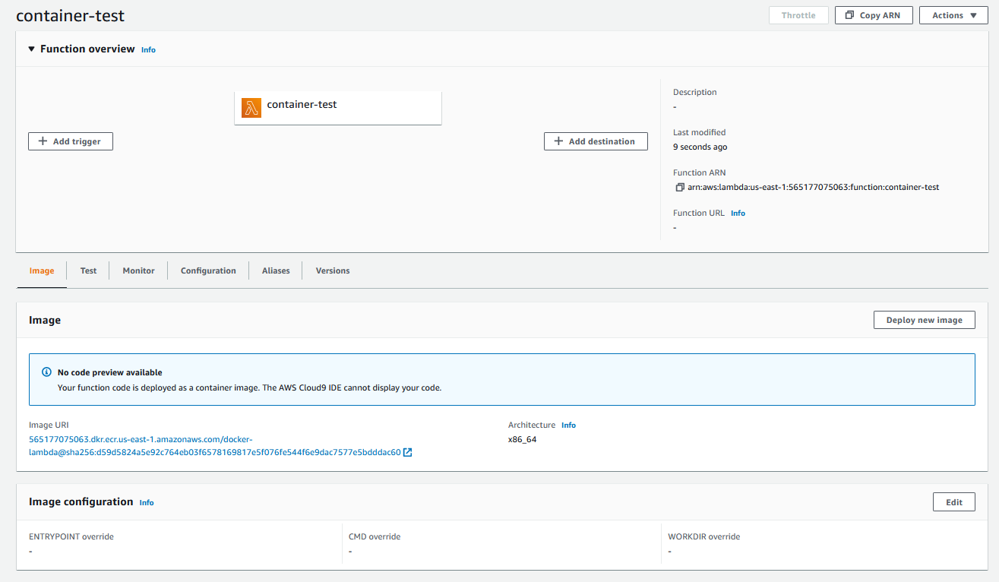
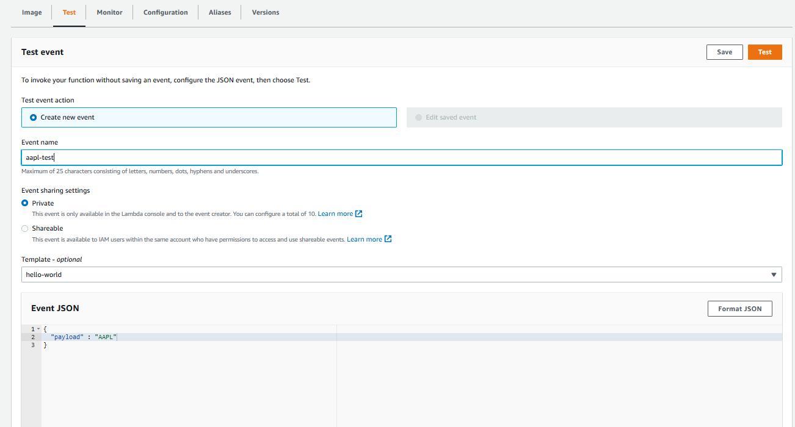
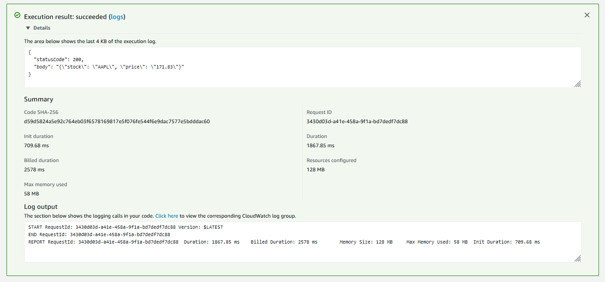
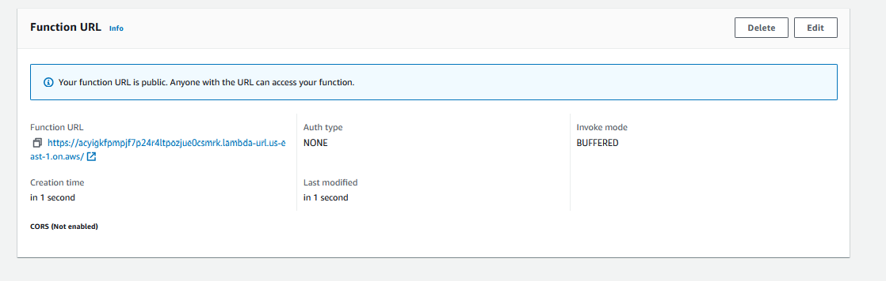
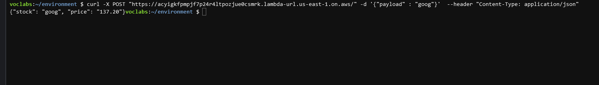

Docker
Setting up Basic Docker Images in Cloud9
This lab will take a lot of time! You will need atleast 5-6 hours on average to work on this lab. Please make sure you start this assignment as soon as possible
Docker image building in Cloud9 is easy since the docker package is already set up. You just have to write some code and run Linux commands!
In Cloud9, start off by cloning your git repository from either the source control button on the lefthand sidebar or through the terminal.
In the root of your repository, create three empty text files in that folder called
Dockerfile,app.py, andrequirements.txt.The results should look like below and have the symbols change automatically:

- Open up the
Dockerfileand add the following text (note the # lines are comments just like python!)
# syntax=docker/dockerfile:1
# adapted from https://www.philschmid.de/aws-lambda-with-custom-docker-image
# https://docs.aws.amazon.com/lambda/latest/dg/python-image.html
FROM python:3.11-slim-buster
CMD ["python", "-c", "import platform; print(f\"version: {platform.python_version()}\")"]- Go to the terminal and change directories to the location of your Dockerfile. Run the command
docker build ./ -t test

- Run the command
docker run testto see if your Dockerfile worked!

Lambda Docker Image
Note that this Dockerfile is invoking your requirements.txt file to install any packages from pip and the app.py lambda_handler function to run the python code.
Now you might think how does this
requirements.txtfile work? Each library which needs to be installed will be listed here. Think of Docker as a virtual environment where you can install any package you need and then you would list them in therequirements.txtfile. A small example of this is given in the following screenshot below. When the requirements.txt file has been changed, you will have to build and redeploy the docker image.

- Use the new Dockerfile contents below for your
Dockerfile.
A few examples of how to build a docker file along with some documentation is given below in this link: https://spacelift.io/blog/dockerfile. You can scroll down to see how a docker commands work and what they do. This will be useful in making this a relatively simple task.
# syntax=docker/dockerfile:1
# adapted from https://www.philschmid.de/aws-lambda-with-custom-docker-image
# https://docs.aws.amazon.com/lambda/latest/dg/python-image.html
FROM public.ecr.aws/lambda/python:3.11
##### copy requirements file and install necessary packages
# ***CODE TO DO***
# ADD the requirements.txt into the ${LAMBDA_TASK_ROOT} directory in the container
RUN pip3 install -r ${LAMBDA_TASK_ROOT}/requirements.txt --target "${LAMBDA_TASK_ROOT}"
##### Copy function code to docker container
# ***CODE TO DO***
# ADD the app.py file into the ${LAMBDA_TASK_ROOT} directory in the container
##### SET THE COMMAND OF THE CONTAINER FOR THE LAMBDA HANDLER
# app (name of py file)
# handler (name of function to execute for lambda job)
CMD [ "app.lambda_handler" ]Note that the ADD and COPY commands in Docker for this instance are similar. The ADD function is more advanced and can auto-extract compressed files into the image. Please use the given python version for this assignment. This assignment was mainly designed to be used with python 3.11. If you a version of python which is lower, we cannot say if it would be compatible.
Set up your python file
app.pywith a function calledlambda_handlerthat accepts theeventandcontextarguments. Wait, we have already done this in basic Lambda! Copy your function from the Lambda service. This will ensure that the response is the same through basic Lambda and through the Docker Lambda.Since you made changes to the Dockerfile and your app.py files, you need to build a new Docker image. Run the command
docker build ./ -t lambda-testso that you name the image something new.This has to be done every time you make changes to the
app.pyfile or theDockerfile.
The syntax of docker build is as follows:
docker build PATH -t 'CONTAINER NAME'
#Container name can be changed in this instance, but lambda-test is preferred.
# -t is a flag which tags the container with a name
# In the above command, ./ is the path where the container would be built.
# Can you recall where does ./ lead to?
Try running the command docker images to see the images you have in your local environment.

- “Running” the python script requires two steps because the Lambda container is built as a listening service that will execute when there is a payload provided to it.
The syntax of docker run is as follows:
docker run -p PORT CONTAINER NAME
#-p flag specifies which port needs to be used for the container to start running.
# CONTAINER NAME can be anything, we defined it to be lambda-test in this scenario.- Run the command
docker run -p 8080:8080 lambda-testto set up the service on your first terminal tab. This will run the service and listen for triggers. Next, click on the green plus icon and chooseNew Terminalto launch a new bash terminal.

- In this second terminal, run the command
curl -XPOST "http://localhost:8080/2015-03-31/functions/function/invocations" -d '{"payload":"hello world!"}'. This should return the same response as what you saw in the Lambda service. Also, go back to the first terminal tab to see the summary of execution message.

Lambda Yahoo Finance Exercise
Python Setup
Return the price of any stock symbol that is submitted through the payload value for Lambda. For example, the goal is to get the DOW stock price if I run the command: http://localhost:8080/2015-03-31/functions/function/invocations" -d '{"payload":"DOW"}'
The url has to be dynamic based on the input stock symbol: https://finance.yahoo.com/quote/DOW
Use the requests and beautifulsoup packages to build the function. Note you will need to add these libraries to the
requirements.txtfile.Start your
app.pyfile with this start code.
import os
import json
import requests
import traceback
from bs4 import BeautifulSoup
url = f"https://finance.yahoo.com/quote/DOW"
# need headers to get pull from yahoo finance
header = {'Connection': 'keep-alive',
'Expires': '-1',
'Upgrade-Insecure-Requests': '1',
'User-Agent': 'Mozilla/5.0 (Windows NT 10.0; WOW64) \
AppleWebKit/537.36 (KHTML, like Gecko) Chrome/54.0.2840.99 Safari/537.36'
}
response = requests.get(url, headers=header)
soup = BeautifulSoup(response.text, "html.parser")
price = soup.find("fin-streamer", {'data-field':"regularMarketPrice", 'data-symbol' : stock.upper()}).text
print(f"price={price}")Coding Requirements:
- Add a try-except framework if any part of your code errors. Use the command
error=traceback.format_exc()to capture the error. What do you return when the function errors instead? - Ensure that if your function does not receive an input or if it receives an invalid stock ticker that it returns a 404 status code. For no input use the message
"No stock provided"and for an invalid ticker choose"Invalid stock provided" - Make the url dynamic to the input stock symbol specified
- Integrate your code into the Lambda framework - event input and response output
- Ensure the response object for a successful request looks like
{"statusCode" : 200, "body" : {"stock" : "A", "price" : "#####"}}.
Hint #1: Try developing using the python console in Cloud9 before integrating into your app.py file. You don’t want to have to build a Docker image every code change, right?
- This process is mainly only for prototyping. You would do this by writing the entire python code first in app.py file, then running the following command in the terminal :
python app.py --payload {'payload': 'stock'}Hint #2: Once you put the code into the Lambda framework, you will have to build and run to complete a development integration.
Hint #3: Implement a basic logger function to see where you might be going wrong? is ther a certain way to pass an input string to the event handler function? Try printing the event out to the console.
Use the following test inputs to confirm your function can handle all the errors gracefully: APPL, AAPL, appl, DOW, dow. Unknown tickers need to be handled and case of the ticker should not matter.
Take a screenshot of your terminal with all 5 test cases and their result and place into your Word doc.
Once your code is ready to go with Lambda, add, commit, and push the files (app.py, Dockerfile, requirements.txt) to GitHub.
Deploying Docker Container as a Lambda Function
Posting Docker Image to ECR
ECR stands for Elastic Container Registry.
Run the command
aws ecr create-repository --repository-name docker-lambdato make a new repo in the elastic container registry to store your new containers.Run the commands to grab info on your AWS account and region.
aws_region=$(aws configure get region) aws_account_id=$(aws sts get-caller-identity --query 'Account' --output text)Run the following command to configure your authentication to talk to the ECR service. Note how we use BASH variable with the
$so that you don’t have to manually enter your region or account id.aws ecr get-login-password \ --region $aws_region \ | docker login \ --username AWS \ --password-stdin $aws_account_id.dkr.ecr.$aws_region.amazonaws.comTag the image in the ECR registry by running the command
docker tag lambda-docker-build $aws_account_id.dkr.ecr.$aws_region.amazonaws.com/docker-lambda- The final
docker-lambdais referring to the new repository you just built a few commands ago.
- The final
Push the image to docker by running the command
docker push $aws_account_id.dkr.ecr.$aws_region.amazonaws.com/docker-lambda

Read more about pushing a Docker image to ECR here.
Docker Setup in Lambda
Go back to the Lambda dashboard by going to this link. Make a new function by clicking on the orange Create function button.
You must select the
Container imageoption that is the third item on the top row of options for Lambda.Name your function
container-testSet your
Execution rolelike we did earlier so that you useLabRoleClick on the
Browse imagesbutton to find the container you just uploaded!

- A popup will launch and you have to select the repository (“docker lambda”) and then your image, which will be called “latest” by default. Click on the orange
Select imagebutton.

Now you see the same overview page for the Lambda. Since this is a container image and not simple code, we cannot actually preview anything. Just click on the Test tab.

Set a name for your test aapl-test and change the event JSON to look like {"payload" : "AAPL"}. Once you are satisfied, click on the Save button and then the orange Test button.

The result of your test will be shown in a green box, and just click on the Details arrow to see the summary. Note that the stock price came back successfully. The billed duration in the example is 2578 ms, with “Init duration” contributing 709.68 ms and the code execution contributing 1867.85 ms. The results are rounded to the nearest millisecond, but are calculated at the 10 microsecond level, WOW!

Take a screenshot of the success output from the test you made in Lambda into your Word doc
Set up Function URL for a REST API
Let’s get the REST API up and running for your Lambda function so that you could call this function with other scripts! Go to the Configuration tab, then the Function URL section, then click Create function URL.

Select NONE as the authentication type. This ensures that anyone with your URL can query the API without security issues. Note this is VERY bad practice if you are in the real world and putting this into production!

Take the Function URL on this page and use as the url for your new REST API. Confirm it work by running it in your browser. It may not work as intended becuase you didn’t provide the Lambda function with an input.

Run the following command in Cloud9 to confirm that you are able to query the Function URL properly curl -X POST [YOUR-FUNCTION-URL] -d '{"payload" : "goog"}' --header "Content-Type: application/json".

EXTRA CREDIT - 5% bonus. Modify your app.py to accept multiple stocks as an input like {“payload” : “AAPL,DOW,MSFT”}. Provide an extra screenshot of your test of this functionality in your Word doc and clearly identify that this is your bonus work. Send back multiple {"statusCode" : 200, "body" : [{"stock" : "A", "price" : "#####"}, {"stock" : "B", "price" : "#####"}]}
Make sure you git add, commit, and push all your work on your container!
Run Unit Tests of your REST API
Launch Sage Maker Studio, clone your Git repo, and run the jupyter notebook lambda-api-testing.ipynb. DO NOT change any of the cells. This will create a new file called lambda-test.json.